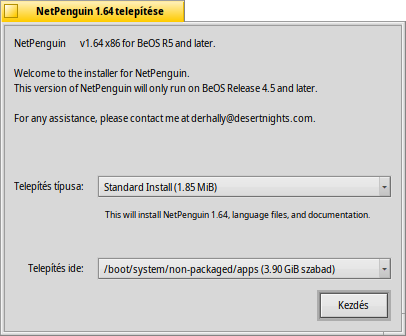
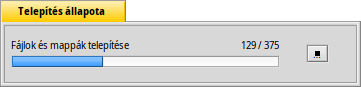

Magyar
Magyar Català
Català Deutsch
Deutsch English
English Español
Español Français
Français Italiano
Italiano Polski
Polski Português
Português Português (Brazil)
Português (Brazil) Română
Română Slovenčina
Slovenčina Suomi
Suomi Svenska
Svenska 中文 ［中文］
中文 ［中文］ Русский
Русский Українська
Українська 日本語
日本語 Csomagtelepítő (PackageInstaller)
Csomagtelepítő (PackageInstaller)
| Asztalsáv: | Nincs bejegyzés. Általában egy támogatott fájltípus megnyitásakor indul el. | |
| Útvonal: | /boot/system/apps/PackageInstaller | |
| Bellítások: | Nincs |
Az oldal egyelőre csak egy piszkozat. Kérlek, nézz vissza később.
A Csomagtelepítő a BeOS PKG formátumú csomagok telepítésére szolgál. Ez lehetőséget ad arra, hogy gyorsan, grafikus felület segítségével telepítsük a csomagokat Haiku alatt.
A program automatikusan elindul, amikor megnyitunk/elindítunk egy .pkg fájlt.
A főablak két módosítási lehetőséget biztosít:
- type of installation (depending on the developer there might be more than one (standard) installation option).
- telepítés helye (csak a lemezek adhatóak meg, az útvonal nem)
A Telepítésre kattintva elindul a kicsomagolás és a telepítés.
Telepítés közben esetleg kaphatunk figyelmeztető- vagy hibaüzenetet, amiből kiderül, hogy mi az ami esetleg hiányzik a program futásához. Ezeket ajánlott a program telepítése előtt feltelepíteni.
A telepítés után a programnak meg kell jelennie az Asztalsávon.